| Integrantes | Jaime Alejandro Vega Barbosa José Alejandro Téllez Prada David Santiago González Nigrinis |
|---|---|
| Docente | Daniel Arenas Seleey |
| Fecha | 20 de noviembre de 2026 |
| Producción | https://urbanmobility.duckdns.org |
| Repositorio | github.com/Joserraldo/urban-mobility-hub |
Todas las entradas son enlaces: haga clic para ir a la sección. Cada figura tiene un enlace «↑ Índice» en su encabezado.
Este documento reúne el análisis y diseño orientado a objetos de Urban Mobility Hub (marca de producto NODO Mobility), el proyecto de desarrollo de software del curso Ingeniería de Software II. Contiene los modelos UML exigidos —casos de uso, clases, secuencia, paquetes, componentes y nodos—, un caso de prueba por integrante sobre casos de uso representativos del dominio, y el estado técnico del software construido y desplegado.
Urban Mobility Hub es una plataforma web multimodal de micromovilidad para Bucaramanga: venta y alquiler de patinetas eléctricas, bicicletas y drones urbanos, con mapa de flota en tiempo real, entrega a domicilio por domiciliarios propios y seguridad IoT basada en gemelos digitales. El desbloqueo de un vehículo exige escanear su QR y verificar que el usuario lleva casco mediante un modelo de visión por computador (YOLOv8n en ONNX) que procesa la imagen de la cámara del vehículo (ESP32-CAM) o del navegador. Los pagos se procesan con Bold (sandbox) y las notificaciones por correo con Brevo. Tres roles usan el sistema: Cliente, Operador y Domiciliario.
src/| Producto solicitado | Dónde está en este documento | Diagramas |
|---|---|---|
| Diagrama de casos de uso | Capítulo 1 | General + 3 por actor + catálogo de 20 UC |
| Diagrama de clases UML — vista estática | Capítulo 2 | Clases del dominio, BCE y modelo de datos |
| Diagramas de secuencia de los casos de uso | Capítulo 3 | 8 diagramas que cubren los 20 UC (+3 de estados) |
| Diagrama de paquetes | Capítulo 4 | Paquetes y dependencias |
| Diagrama de componentes | Capítulo 5 | Componentes UML + C4 nivel 3 |
| Diagrama de nodos | Capítulo 6 | Despliegue en VM Azure y demo local |
| Caso de prueba por integrante | Capítulo 7 | CP0001_ALQUILER, CP0002_DESBLOQUEO y CP0003_ENTREGA (ninguno de login o registro) |
| Pantallazos de la página y del software | Documento aparte: Entrega_Pantallazos_UrbanMobilityHub.pdf | Más de 30 figuras con tabla de contenido enlazada |
El modelo de casos de uso describe qué hace el sistema desde el punto de vista de sus actores. Se presenta un diagrama general y tres vistas por actor para mantener la legibilidad. Cada caso tiene una especificación completa (precondiciones, garantías, flujo principal, alternos, excepciones y reglas de negocio) en entregables/analisis/casos-de-uso/UC01…UC20.md.
| Actor | Tipo | Responsabilidad |
|---|---|---|
| Cliente | Primario, humano | Consulta el catálogo y el mapa, compra o alquila, paga, desbloquea y usa vehículos. |
| Operador | Primario, humano (hereda de Cliente) | Supervisa la flota y los gemelos digitales, atiende alertas, administra catálogo, hubs y mantenimiento, asigna entregas. |
| Domiciliario | Primario, humano (hereda de Cliente) | Ejecuta las entregas a domicilio y reporta retrasos. |
| Vehículo IoT | Primario, sistema | Reporta telemetría (posición, batería, impacto, casco) y recibe el comando de desbloqueo. |
| Pasarela de pagos · Mapas · Correo | Secundarios, sistemas externos | Bold / pasarela simulada, OpenStreetMap, Brevo. |
Plano maestro con los 20 casos de uso y los tres roles. El Operador y el Domiciliario heredan del Cliente (generalización de actores). Se modelan como actores secundarios la pasarela de pagos, el servicio de mapas, el correo (Brevo) y el vehículo IoT.
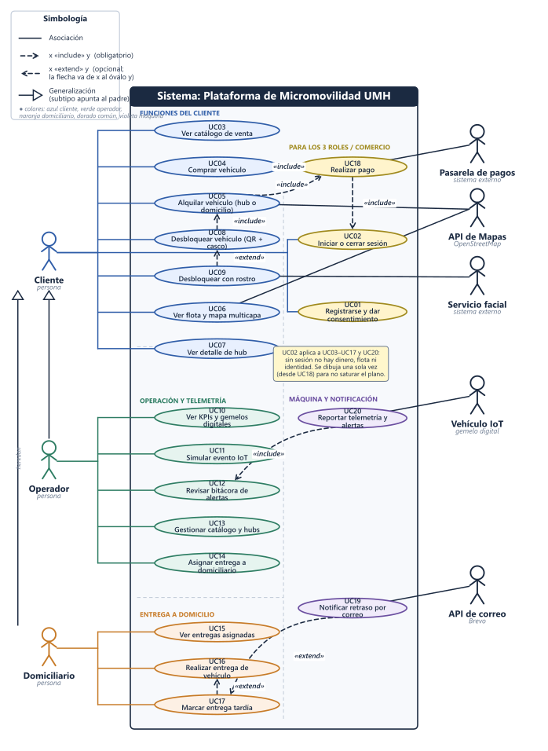
entregables/diagramas/fuentes/02-casos-de-uso-general.pyComprar y Alquilar «include» Pagar, que a su vez exige sesión. Desbloquear con rostro «extend» Desbloquear (QR + casco): solo ocurre cuando el QR no se puede leer y hay consentimiento biométrico.
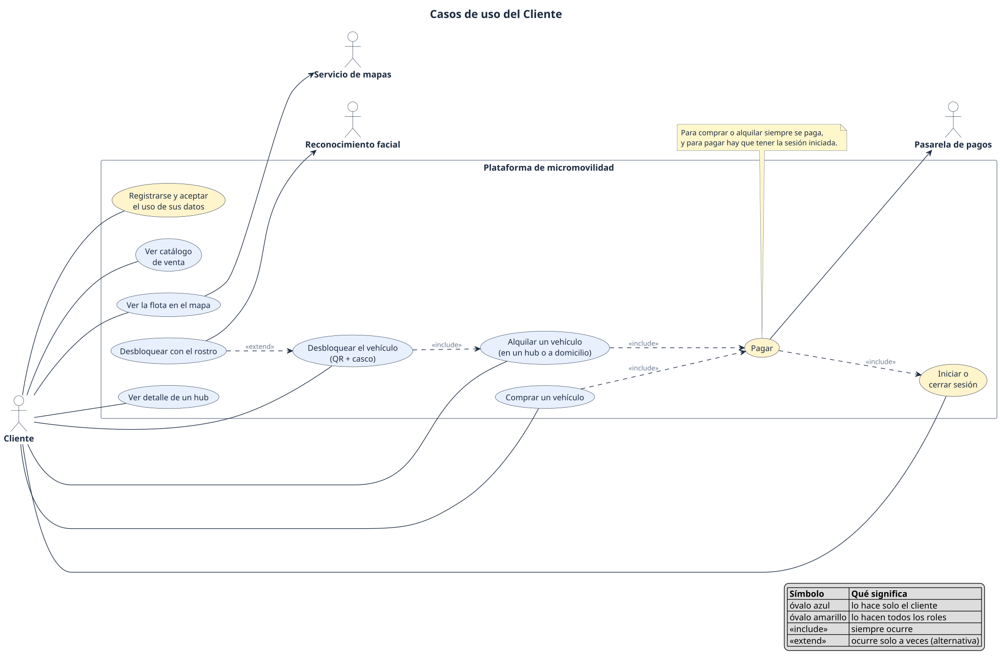
entregables/diagramas/fuentes/03-casos-de-uso-cliente.pumlSupervisión de la flota (KPIs y gemelos digitales), simulación de eventos IoT, bitácora de alertas, catálogo de vehículos y hubs y asignación de entregas. La telemetría del vehículo (UC20) «include» el registro en la bitácora (UC12).
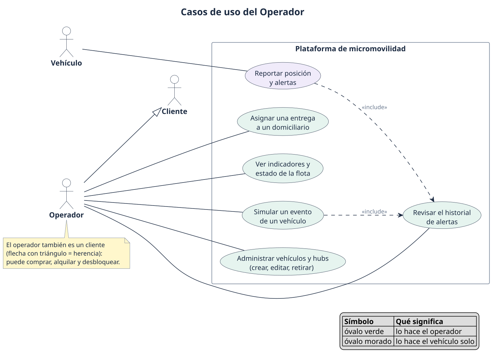
entregables/diagramas/fuentes/04-casos-de-uso-operador.pumlMarcar entrega tardía «extend» Realizar entrega (solo si se vence el plazo) y Notificar retraso por correo «extend» la tardía.
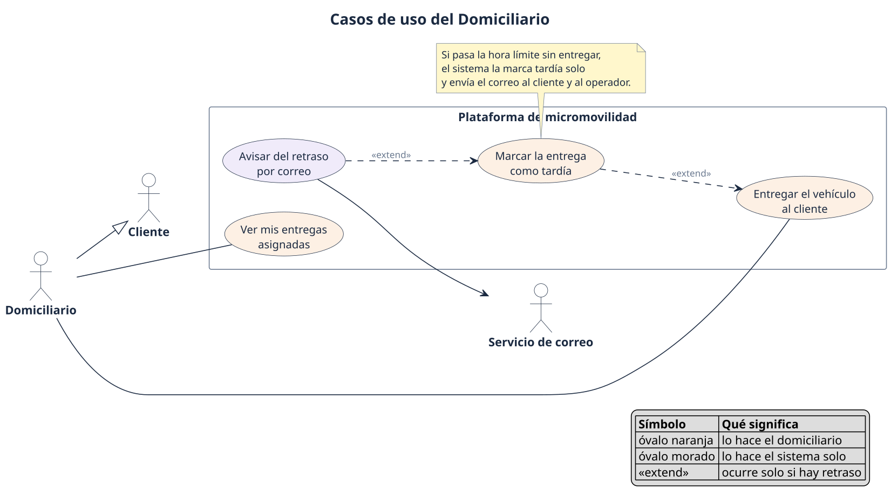
entregables/diagramas/fuentes/05-casos-de-uso-domiciliario.pumlLa última columna enlaza el diagrama de secuencia que realiza cada caso de uso (capítulo 3).
| ID | Caso de uso | Actor principal | Requisitos | Prioridad | Secuencia |
|---|---|---|---|---|---|
| UC01 | Registrarse y dar consentimiento | Compartido | RF-20 | P1 | D-15 |
| UC02 | Iniciar o cerrar sesión | Compartido | RF-21 | P1 | D-15 |
| UC03 | Ver catálogo de venta | Cliente | RF-02 | P2 | D-28 |
| UC04 | Comprar vehículo | Cliente | RF-03 | P1 | D-16 |
| UC05 | Alquilar vehículo (hub o domicilio) | Cliente | RF-05, RF-06 | P1 | D-17 |
| UC06 | Ver flota y mapa multicapa | Cliente | RF-04, RF-08 | P1 | D-28 |
| UC07 | Ver detalle de hub | Cliente | RF-07 | P2 | D-28 |
| UC08 | Desbloquear vehículo (QR + casco) | Cliente | RF-09 | P1 | D-18 |
| UC09 | Desbloquear con rostro | Cliente («extend» UC08) | RF-10, RF-22 | P2 | D-18 |
| UC10 | Ver KPIs y gemelos digitales | Operador | RF-13, RF-14 | P1 | D-29 |
| UC11 | Simular evento IoT | Operador | RF-15 | P1 | D-19 |
| UC12 | Revisar bitácora de alertas | Operador | RF-12 | P1 | D-19 |
| UC13 | Gestionar catálogo y hubs | Operador | RF-23, RF-24 | P3 | D-29 |
| UC14 | Asignar entrega a domiciliario | Operador | RF-25 | P2 | D-20 |
| UC15 | Ver entregas asignadas | Domiciliario | RF-25 | P2 | D-20 |
| UC16 | Realizar entrega de vehículo | Domiciliario | RF-25 | P2 | D-20 |
| UC17 | Marcar entrega tardía | Domiciliario / sistema | RF-27 | P2 | D-20 |
| UC18 | Realizar pago | Sistema (vía UC04/UC05) | RF-26 | P1 | D-16, D-17 |
| UC19 | Notificar retraso por correo | Sistema | RF-27 | P2 | D-20 |
| UC20 | Reportar telemetría y alertas | Vehículo IoT | RF-08, RF-11 | P1 | D-19 |
Casos representativos del problema. Los casos de prueba del capítulo 7 se escogieron sobre UC05/UC18 (alquiler y pago), UC08 (desbloqueo con QR y casco) y UC16/UC17 (entrega a domicilio y retraso): son el núcleo del negocio de micromovilidad y no casos transversales como registro o inicio de sesión.
La vista estática describe la estructura del sistema: las clases del dominio con sus atributos y operaciones, las relaciones (asociación, composición, generalización y realización) y sus multiplicidades.
| Clase | Responsabilidad | Relaciones clave |
|---|---|---|
| Usuario | Identidad, rol (cliente, operador, domiciliario) y credenciales con hash. | 1 — 0..* Consentimiento, Reserva, Compra; 1 — 0..* Entrega (como domiciliario) |
| Consentimiento | Autorización explícita de datos personales y biometría (Ley 1581), revocable. | * — 1 Usuario |
| Hub | Estación física con capacidad, carga y ubicación. | 1 — 0..* Vehículo |
| Vehículo | Gemelo digital: tipo, modo (venta/alquiler), estado, batería, posición, tarifa por minuto y QR. | * — 0..1 Hub; 1 — 0..* Alerta, Orden de mantenimiento |
| Reserva | Alquiler con modalidad hub/domicilio y máquina de estados. | * — 1 Usuario, Vehículo; 1 — 0..* Pago; 1 — 0..1 Entrega |
| Compra | Venta de un vehículo. | 1 — 0..* Pago |
| Pago | Comprobante (base, cargo de viaje o compra) con referencia de la pasarela. | * — 1 Reserva o Compra |
| SesionDesbloqueo | Estado del desbloqueo (qr → helmet → ready / denied / expired) con vencimiento a 120 s. | * — 1 Reserva |
| Entrega | Reparto a domicilio con plazo, estado y causa de retraso. | 0..1 — 1 Reserva; * — 1 Domiciliario |
| Alerta | Incidente de seguridad (sin casco, caída, sin GPS, batería crítica); solo inserción. | * — 1 Vehículo |
PasarelaDePagos tiene dos realizaciones (simulada determinista y Bold); el servidor elige una según la configuración, sin cambiar el caso de uso (patrón Strategy).FuenteDeDatos (DataSource) desacopla los componentes de React del origen de los datos (mock o API REST).ReglaDeSeguridad se especializa en casco, caída, GPS y batería, evaluadas en orden de gravedad por evaluateTelemetry.Entidades con atributos tipados, multiplicidades y navegabilidad. Incluye dos jerarquías de POO: la interfaz FuenteDeDatos (implementaciones mock y API real) y ReglaDeSeguridad (casco, caída, GPS y batería), además de PasarelaDePagos (simulada y Bold).
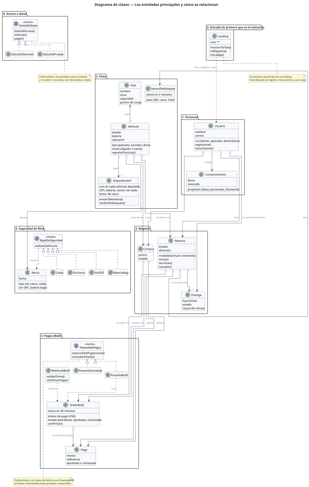
entregables/diagramas/fuentes/13-clases.pumlTres capas: «boundary» (pantallas y servicios externos) → «control» (reglas de negocio) → «entity» (datos). Una interfaz nunca accede a una entidad directamente.
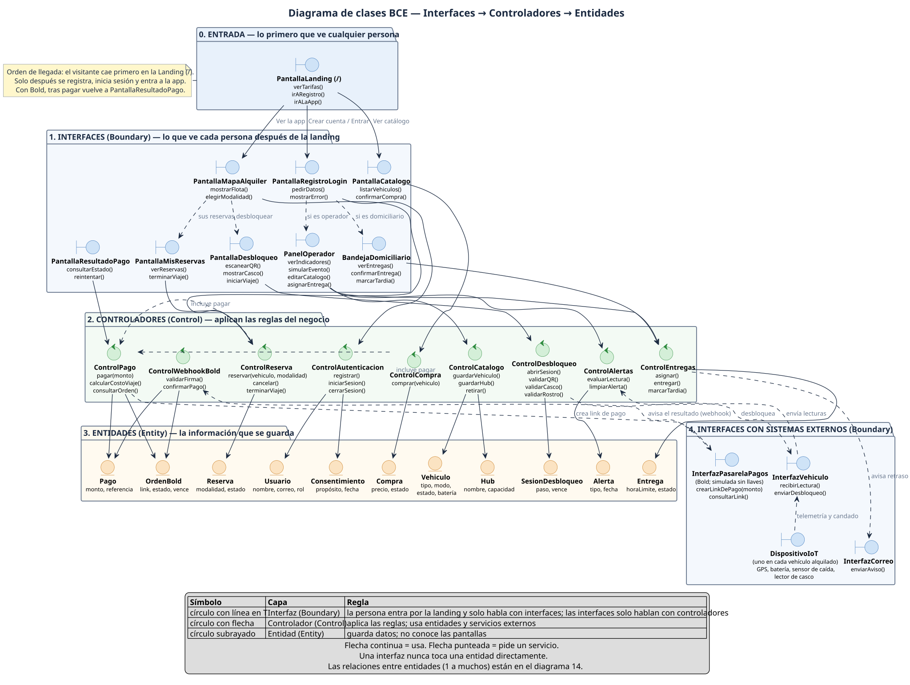
entregables/diagramas/fuentes/25-clases-bce.pumlProyección del modelo de clases sobre SQLite (src/server/db/schema.sql): cardinalidades 1:N y 1:0..1; la bitácora de alertas es de solo inserción (no se borra).
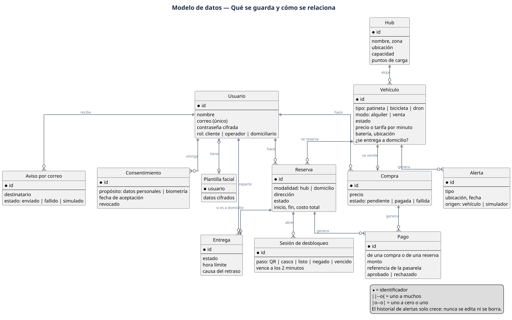
entregables/diagramas/fuentes/14-modelo-datos.pumlCada diagrama de secuencia realiza uno o varios casos de uso y muestra el intercambio de mensajes en el tiempo entre actor, interfaz, servidor, servicios externos y base de datos, con los fragmentos combinados alt, opt, loop y group para los flujos alternos y las excepciones. Los diagramas D-28 y D-29 se añadieron en esta entrega para que los 20 casos de uso tengan su secuencia.
| Diagrama | Casos de uso que realiza | Regla de negocio destacada |
|---|---|---|
| D-15 | UC01, UC02 | Sin consentimiento no hay cuenta; contraseña con hash |
| D-16 | UC04, UC18 | Pago rechazado ⇒ el vehículo no se vende |
| D-17 | UC05, UC18 | Prepago base de $10.000; resto por minuto |
| D-18 | UC08, UC09 | QR + casco en sesión de 120 s; rostro como alterno |
| D-19 | UC20, UC12, UC11 | Alerta en el panel en menos de 1 s; historial no se borra |
| D-20 | UC14, UC15, UC16, UC17, UC19 | Máx. 5 entregas activas; correo de retraso sin duplicados |
| D-28 | UC03, UC06, UC07 | Posición en vivo cada 2 s; «sin señal» si supera 5 s |
| D-29 | UC10, UC13 | RBAC; hub con vehículos no se borra (RF-24) |
Sin aceptar el tratamiento de datos (Ley 1581) no se crea la cuenta; la contraseña se guarda con scrypt y sal; ante credenciales erradas no se revela cuál dato falló. Al cerrar el viaje se cobra el valor por minuto.
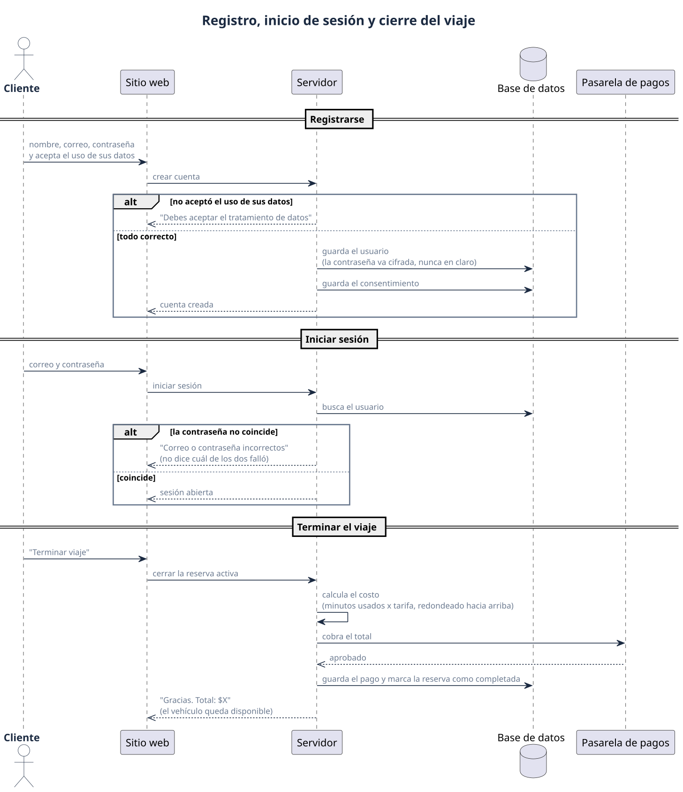
entregables/diagramas/fuentes/15-secuencia-registro-login-cierre.pumlLa compra nace pendiente; solo con pago aprobado el vehículo queda vendido. Si el pago se rechaza, el vehículo no cambia de estado.
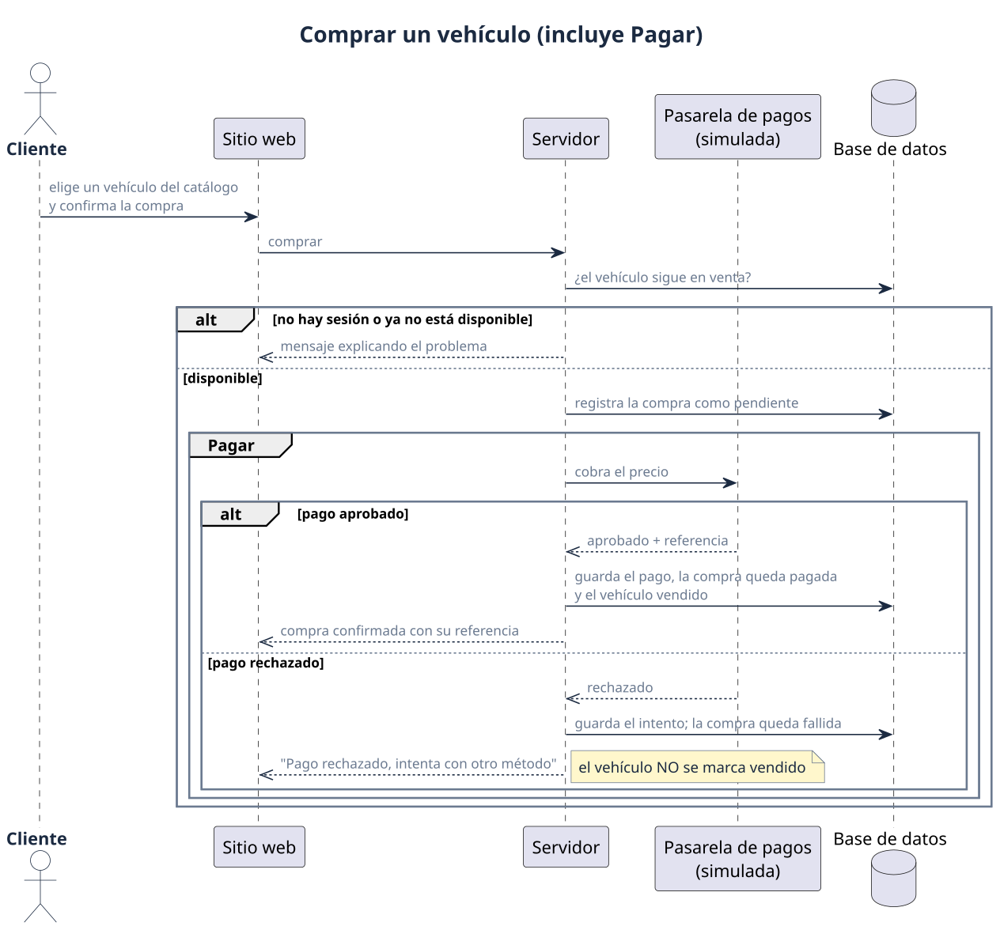
entregables/diagramas/fuentes/16-secuencia-compra-pago.pumlReserva solicitada, cobro del valor base de $10.000 y vehículo reservado; el resto se cobra por minuto al terminar. Base del caso de prueba CP0001_ALQUILER.
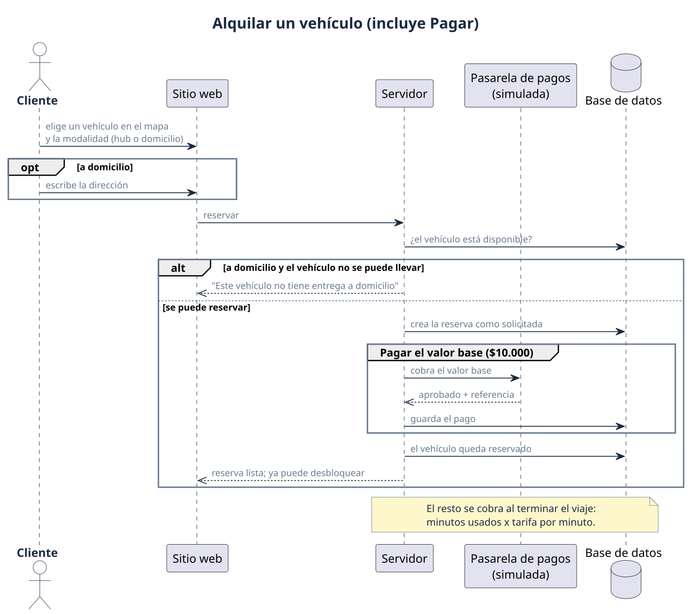
entregables/diagramas/fuentes/17-secuencia-alquiler-pago.pumlTres pasos dentro de una sesión de 120 s: QR, casco y «Iniciar viaje». El rostro reemplaza al QR, nunca al casco. Base del caso de prueba CP0002_DESBLOQUEO.
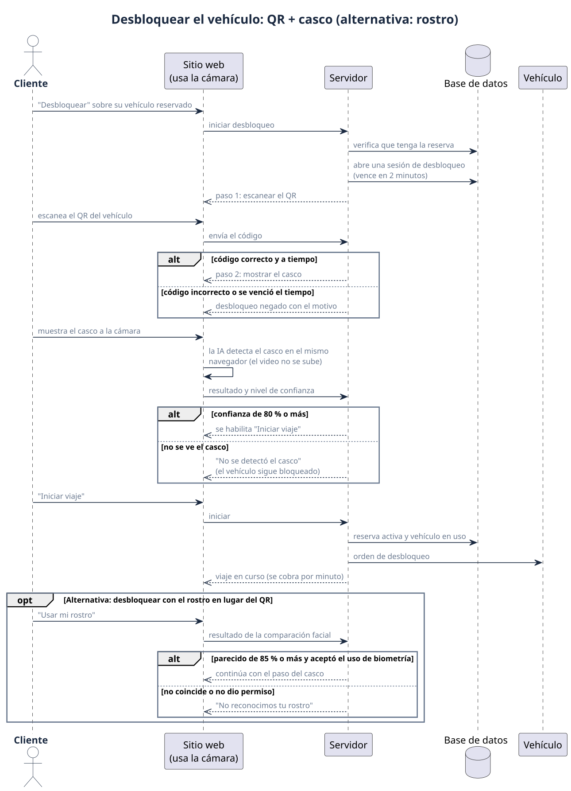
entregables/diagramas/fuentes/18-secuencia-desbloqueo.pumlCada lectura se evalúa contra las reglas en orden de gravedad; si hay incidente se guarda en la bitácora y llega al panel en menos de 1 s por SSE. El operador puede simular el evento (origen simulator).
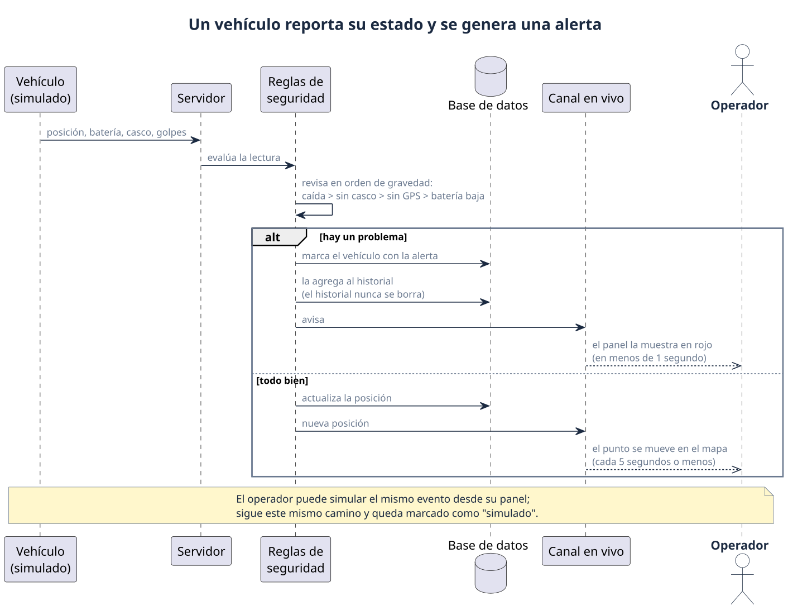
entregables/diagramas/fuentes/19-secuencia-alerta.pumlMáximo 5 entregas activas por domiciliario; confirmación atómica; si hay retraso (manual o por barrido) se envía correo una sola vez. Base del caso de prueba CP0003_ENTREGA.
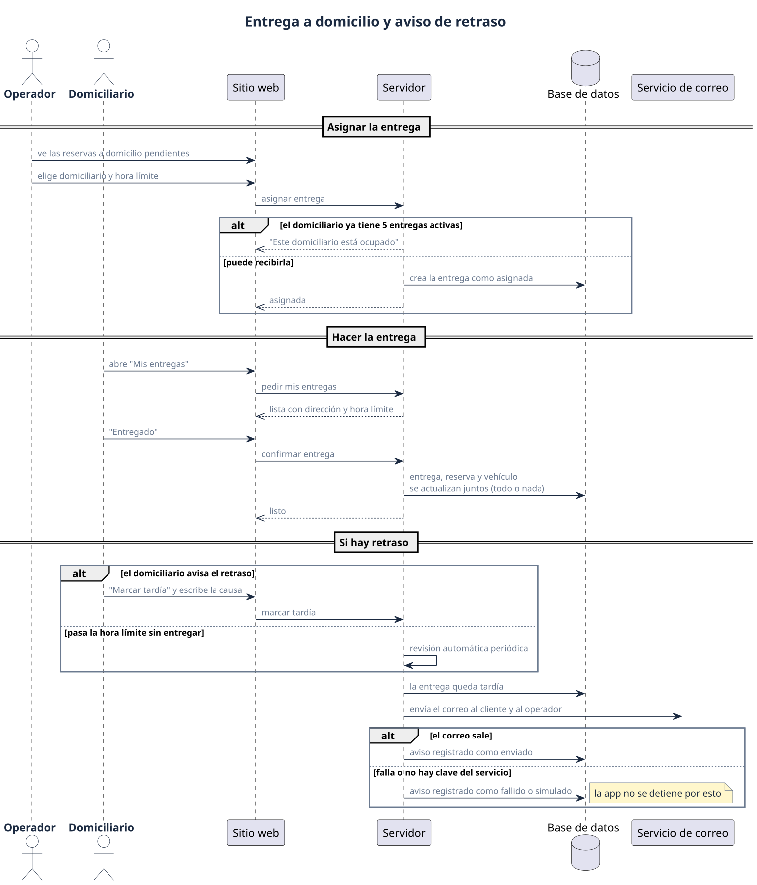
entregables/diagramas/fuentes/20-secuencia-entrega-domicilio.pumlCatálogo público indexable, mapa multicapa con posiciones en vivo cada 2 s por SSE (marcadas «sin señal» si superan 5 s) y detalle de ocupación de un hub.
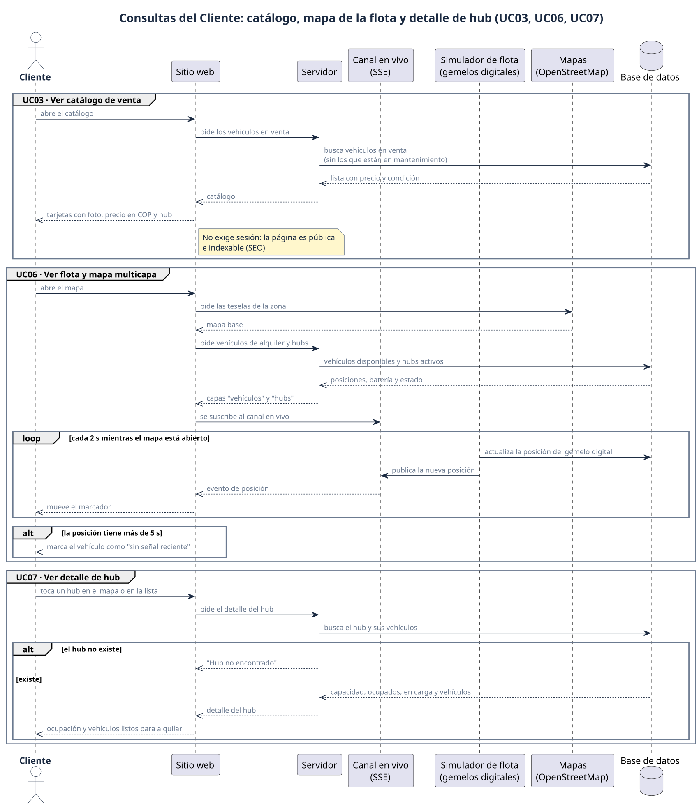
entregables/diagramas/fuentes/28-secuencia-consultas-cliente.pumlControl de rol en cada operación; los vehículos no se borran (cambian de estado); un hub con vehículos no se da de baja (RF-24); un vehículo en viaje no pasa a mantenimiento.
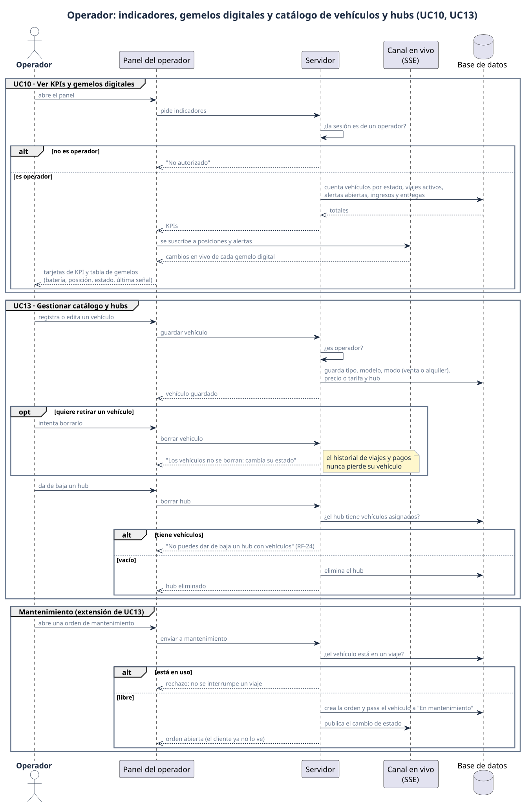
entregables/diagramas/fuentes/29-secuencia-operador-kpis-catalogo.pumlSolicitada → Activa → Completada, o Cancelada desde Solicitada o Activa.
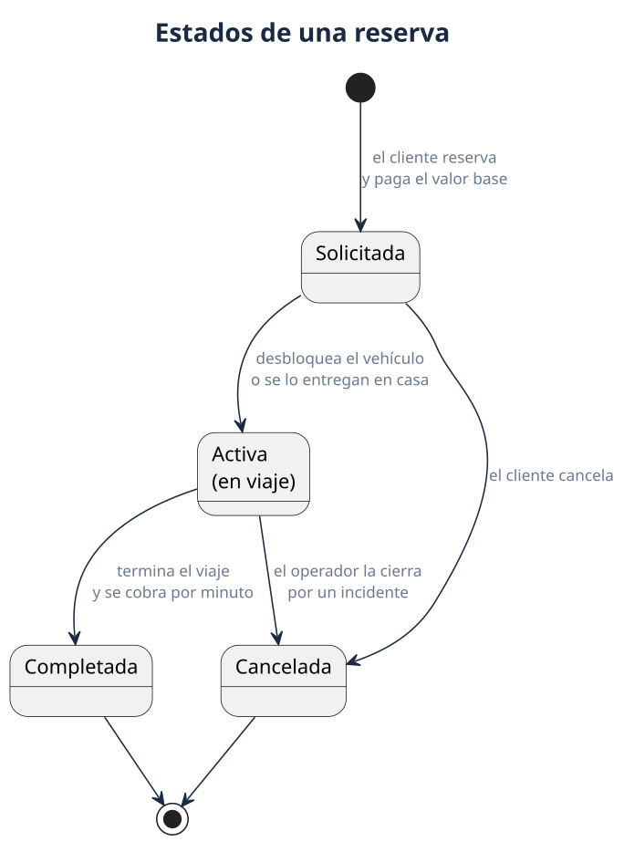
entregables/diagramas/fuentes/21-estados-reserva.pumlEstado compuesto En uso con sub-estados de alerta; En mantenimiento no es visible para el cliente y no admite viajes.
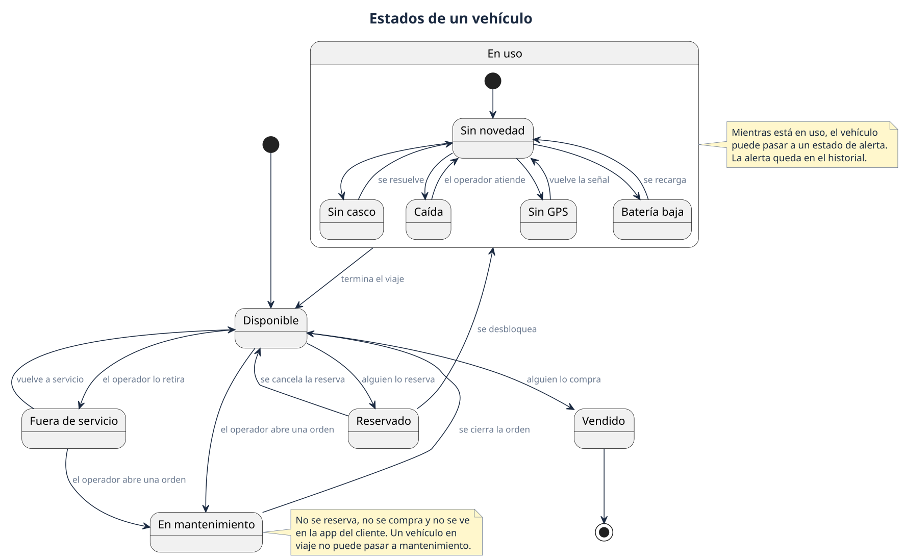
entregables/diagramas/fuentes/22-estados-vehiculo.pumlAsignada → En camino → Entregada; Tardía por plazo vencido o por aviso del domiciliario.
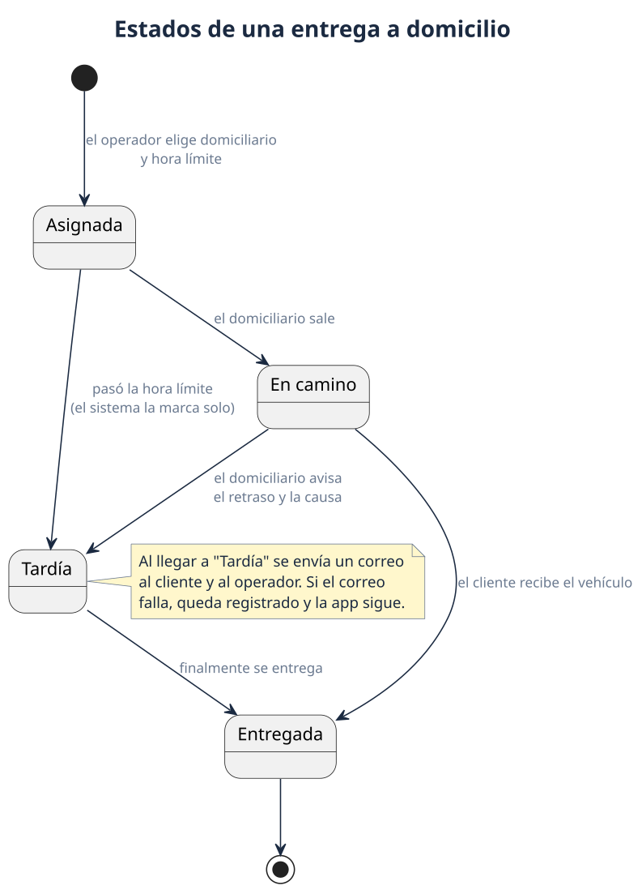
entregables/diagramas/fuentes/23-estados-entrega.pumlEl diagrama de paquetes organiza el código en unidades cohesivas y hace explícitas sus dependencias, lo que permite razonar sobre acoplamiento y sobre el impacto de un cambio.
| Paquete | Contenido | Carpeta |
|---|---|---|
| Experiencia de usuario (UX) | Rutas, páginas y componentes de React por rol | src/routes, src/components |
| Servicios de movilidad | Reservas, desbloqueo, flota, entregas, mantenimiento | src/server/api, services |
| Servicios de apoyo | Pagos (Bold / simulada), correo (Brevo), SSE, sesiones | src/server/services |
| Inteligencia artificial | Detección de casco YOLOv8 (navegador y sidecar) | src/lib/helmet-model.ts, vision-service |
| Dominio | Reglas puras sin HTTP ni SQL | src/server/domain |
| Datos | Esquema, migraciones, seeders y repositorios | src/server/db, repositories.ts |
| Compartido | Tipos del dominio usados por cliente y servidor | src/shared/types |
Regla de dependencias. Interfaz → servicios → dominio → datos. Ningún componente de interfaz importa la base de datos ni los datos de prueba directamente (se accede siempre por DataSource), y el dominio no depende de ningún otro paquete, por eso se prueba de forma aislada con Vitest.
Agrupación del código fuente por responsabilidad y sus dependencias «import». Las dependencias van siempre hacia abajo: interfaz → servicios → dominio → datos; el dominio no conoce HTTP ni SQL.
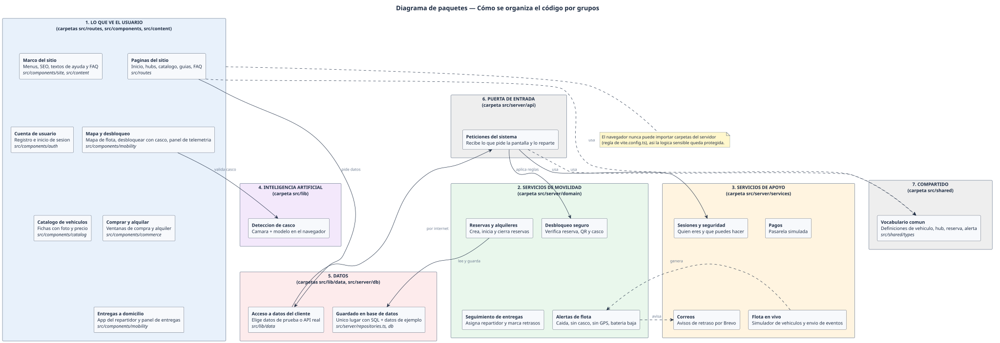
entregables/diagramas/fuentes/10-paquetes.pumlEl diagrama de componentes muestra las piezas ejecutables reemplazables del sistema y los contratos entre ellas. Se complementa con el nivel 3 del modelo C4, que detalla los componentes internos del servidor.
| Interfaz | Provee | Requiere | Protocolo |
|---|---|---|---|
API REST /api/* | Servidor | Sitio web, panel, app del domiciliario | HTTPS + JSON, cookie de sesión |
Canal en vivo /api/stream | Servidor (SSE) | Mapa y panel del operador | Server-Sent Events |
Ingesta IoT /api/ingest | Servidor | Vehículo / ESP32-CAM | HTTPS + clave x-ingest-key |
| Veredicto de casco | umh-vision (127.0.0.1:8090) | Servidor | HTTP interno + WebSocket de cámara |
| Pagos | Bold / pasarela simulada | Servidor | Checkout embebido + webhook HMAC |
| Correo | Brevo | Servidor | REST (fetch) |
| Persistencia | SQLite | Repositorios | node:sqlite |
Componentes del navegador y del servidor con interfaces provistas (círculo) y requeridas (semicírculo): REST /api, canal SSE, pagos Bold, correo Brevo, ingesta IoT POST /api/ingest y base SQLite.
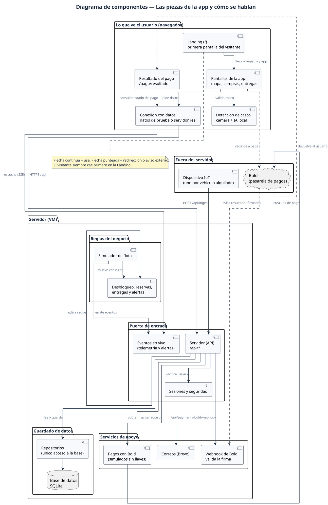
entregables/diagramas/fuentes/11-componentes.puml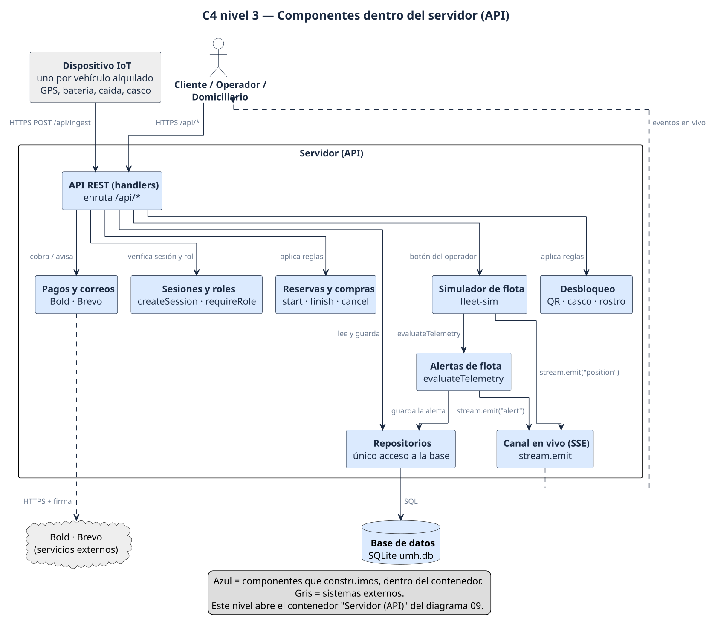
entregables/diagramas/fuentes/26-c4-componentes.pumlEl diagrama de nodos (despliegue) asigna los artefactos de software a los nodos físicos y de ejecución, con los protocolos de comunicación entre ellos.
| Nodo | Entorno de ejecución | Artefactos |
|---|---|---|
| Celular / PC del usuario | Navegador moderno (Chromium, Safari) | SPA de React, onnxruntime-web con el modelo de casco |
| Vehículo IoT | ESP32-CAM (firmware Arduino) | Captura de fotogramas y telemetría hacia /api/camera/frame e /api/ingest |
| VM Azure (2 vCPU, Ubuntu 24.04) | Nginx (TLS Let's Encrypt, HSTS) → systemd umh (Node 24) en :8080 | .output/server/index.mjs, umh-vision en :8090, /var/lib/umh/umh.db |
| Servicios de terceros | SaaS | Bold (pagos), Brevo (correo), OpenStreetMap (teselas), GitHub (código y CI) |
Topología de demostración local. Para la presentación, el mismo artefacto corre en el portátil del equipo (sh scripts/demo-local.sh): servidor y web en :8080, visión en :8090, un túnel cloudflared con HTTPS para abrir la app desde el celular, y la webcam del PC haciendo de ESP32-CAM. El procedimiento está en docs/LANZAMIENTO.md.
Dispositivos cliente, VM Azure (Ubuntu 24.04) con Nginx + Let's Encrypt, servicio systemd umh (Node 24), sidecar umh-vision y SQLite; terceros Bold, Brevo, OpenStreetMap y GitHub. Línea continua = operativo; punteada = previsto.
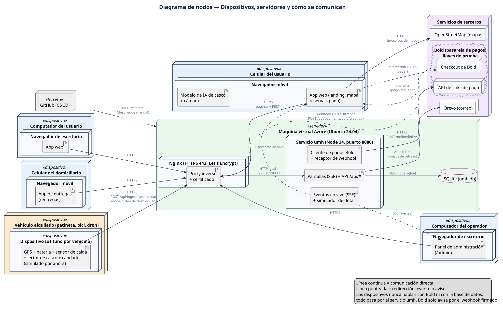
entregables/diagramas/fuentes/12-nodos.pumlCada integrante elaboró un caso de prueba funcional sobre un caso de uso representativo del problema de micromovilidad. Ninguno corresponde a casos transversales (registro, inicio de sesión o similares).
| ID | Caso de prueba | Caso de uso | Responsable |
|---|---|---|---|
| CP0001_ALQUILER | Alquilar un vehículo en hub y pagar el prepago | UC05 Alquilar vehículo | Jaime Alejandro Vega Barbosa |
| CP0002_DESBLOQUEO | Desbloquear el vehículo con QR y verificación de casco | UC08 Desbloquear vehículo (QR + casco) | José Alejandro Téllez Prada |
| CP0003_ENTREGA | Realizar una entrega a domicilio y marcar una entrega tardía | UC16 Realizar entrega | David Santiago González Nigrinis |
Los casos siguen la plantilla de caso de prueba indicada en clase: identificador CP####_xxxxxxxx, función a probar, objetivo, descripción, criterios de éxito y de falla, precondiciones, perfil del usuario, necesidades (datos y configuración), autor, fecha de creación, flujo del caso de prueba (No. paso · usuario del sistema · sistema) y postcondiciones. Debajo de cada plantilla se agrega, como información complementaria, la trazabilidad con casos de uso y diagramas, las variantes negativas probadas y la evidencia de ejecución automatizada.
| Caso de prueba | |||
|---|---|---|---|
| Identificador caso de prueba | CP0001_ALQUILER — Alquilar un vehículo en hub y pagar el prepago | ||
| Función a probar | Módulo de reservas y pagos del cliente: creación de la reserva de alquiler (POST /api/reservations) y cobro del prepago base (POST /api/payments, pasarela simulada o Bold). Casos de uso UC05 Alquilar vehículo y UC18 Realizar pago. | ||
| Objetivo | Verificar que un cliente autenticado puede reservar un vehículo de alquiler disponible en un hub, que el sistema cobra el prepago base de $10.000 COP antes de habilitar el desbloqueo, y que las reglas de negocio de la reserva (una sola reserva abierta sin pagar, vehículo no disponible, rechazo del pago) se cumplen. | ||
| Descripción | El caso recorre el alquiler de una patineta en un hub desde la app web: el cliente elige el vehículo en el mapa, selecciona la modalidad «Recoger en hub», confirma la reserva y paga el prepago de $10.000 COP. Se comprueba que antes del pago el desbloqueo está bloqueado y que después del pago queda habilitado, porque el prepago es la garantía del alquiler en el modelo de negocio de micromovilidad. | ||
| Criterios de éxito |
| ||
| Criterios de falla |
| ||
| Precondiciones |
| ||
| Perfil del usuario | Cliente (rol customer) autenticado: cliente@demo.co. | ||
| Necesidades para el caso de prueba | Datos de prueba:
sh scripts/demo-local.sh, SQLite con UMH_SEED_DEMO=1) o producción (https://urbanmobility.duckdns.org); navegador Chromium; pasarela simulada o Bold sandbox; Brevo opcional. | ||
| Autor | Jaime Alejandro Vega Barbosa | ||
| Fecha de creación | 20/11/2026 | ||
| Flujo del caso de prueba | No. paso | Usuario del sistema | Sistema |
| 1 | Iniciar sesión en /login con el usuario de prueba.Entrada: Credenciales válidas | Redirige a la app; la cabecera muestra el nombre del cliente. | |
| 2 | Abrir /app, modo Alquilar, y tocar el vehículo SC-1042 en el mapa.Entrada: SC-1042 | Se abre la ficha con modelo, batería, tarifa por minuto y hub. | |
| 3 | Elegir Recoger en hub y confirmar la reserva (paso 2 y 3 de RNF-07). Entrada: modality = hub | POST /api/reservations → 201. Reserva en estado Solicitada; el vehículo pasa a Reservado y desaparece de los disponibles. | |
| 4 | Sin pagar, pulsar Desbloquear en la tarjeta de la reserva. | El sistema lo impide con 402: «Paga el prepago de esta reserva para desbloquear el vehículo» (con Bold: «Completa el pago del prepago en Bold…»). | |
| 5 | Pulsar Pagar prepago y completar el pago. Entrada: $10.000 COP | Se registra un pago kind = base aprobado con referencia; la tarjeta muestra «Prepago pagado ($10.000). Ya puedes desbloquearlo». | |
| 6 | Abrir /mis-reservas. | La reserva aparece con su referencia, vehículo, hub y estado del prepago. | |
| Post condiciones | Existe una reserva Solicitada con prepago aprobado; el vehículo queda Reservado y el desbloqueo (UC08) está habilitado. En los alternos no queda ningún cambio de negocio parcial. | ||
Caso de uso: UC05 Alquilar vehículo · UC18 Realizar pago («include») · Requisitos: RF-05, RF-06, RF-26 · RNF-07 (máx. 3 pasos) · Diagramas: D-17 Secuencia alquilar y pagar · D-21 Estados de la reserva · Técnica: Caja negra · partición de equivalencias sobre el estado del vehículo y del pago · transición de estados de la reserva (requested → active).
| ID | Variante negativa / alterna | Resultado esperado | Resultado |
|---|---|---|---|
| A1 | Reservar un segundo vehículo sin haber pagado el primero. | La reserva anterior sin pagar se cancela y su vehículo vuelve a Disponible (máx. 1 reserva abierta sin pagar). | Conforme |
| A2 | Reservar un vehículo que otro cliente acaba de reservar. | 409 «Ese vehículo no está disponible para alquiler»; no se crea reserva. | Conforme |
| A3 | Elegir A domicilio en un vehículo no apto para reparto. | 422 «Este vehículo no tiene entrega a domicilio; recógelo en su hub». | Conforme |
| A4 | Pago rechazado o pasarela sin respuesta (timeout). | 402 con el motivo; el pago queda rechazado y la reserva sigue sin habilitar el desbloqueo. | Conforme |
| A5 | Reserva sin pagar con más de 30 min. | Se cancela automáticamente al listar las reservas y el vehículo se libera. | Conforme |
Evidencia de ejecución (20-nov-2026, Vitest 156/156 aprobadas):
tests/integration/flujo-cliente.test.ts — «sin pagar el prepago no hay desbloqueo (402); pagado, sí», «máximo una reserva abierta sin pagar…», «las solicitudes sin pagar de hace más de 30 min se cancelan al listar».tests/integration/api-reglas.test.ts — «RF-05: reserva a domicilio» (apto / no apto) y «UC18-E2: timeout de la pasarela».tests/unit/pasarela.test.ts y tests/integration/bold.test.ts — aprobación, rechazo y firma del webhook de Bold.tests/e2e/reserva-desbloqueo.spec.ts — recorrido en navegador: reservar, pagar, desbloquear, viajar y terminar.| Caso de prueba | |||
|---|---|---|---|
| Identificador caso de prueba | CP0002_DESBLOQUEO — Desbloquear el vehículo con QR y verificación de casco | ||
| Función a probar | Módulo de desbloqueo seguro: sesión de desbloqueo (/api/unlock/sessions), validación del QR, verificación de casco con visión por computador (YOLOv8n, cámara del vehículo) e inicio del viaje. Caso de uso UC08 Desbloquear vehículo (QR + casco). | ||
| Objetivo | Comprobar que el viaje solo inicia cuando, dentro de una sesión de desbloqueo de 120 s, el cliente escanea el QR que corresponde al vehículo reservado y el sistema detecta el casco con la confianza mínima exigida; y que cualquier fallo (QR equivocado, sin casco, orden alterado o sesión vencida) deja intactos la reserva y el vehículo. | ||
| Descripción | El caso verifica la regla de seguridad central del negocio: un vehículo solo se desbloquea si quien lo reservó está frente a él (QR del manubrio) y lleva casco puesto. Se ejecuta el flujo completo de tres pasos —escanear QR, verificar casco e iniciar viaje— dentro de una sesión de 120 s, y se termina el viaje para comprobar el cobro por minuto. | ||
| Criterios de éxito |
| ||
| Criterios de falla |
| ||
| Precondiciones |
| ||
| Perfil del usuario | Cliente (rol customer) autenticado y dueño de la reserva: cliente@demo.co. | ||
| Necesidades para el caso de prueba | Datos de prueba:
sh scripts/demo-local.sh, SQLite con UMH_SEED_DEMO=1) o producción (https://urbanmobility.duckdns.org); navegador Chromium; pasarela simulada o Bold sandbox; Brevo opcional. | ||
| Autor | José Alejandro Téllez Prada | ||
| Fecha de creación | 20/11/2026 | ||
| Flujo del caso de prueba | No. paso | Usuario del sistema | Sistema |
| 1 | En la tarjeta de la reserva pulsar Desbloquear. Entrada: Reserva pagada | POST /api/unlock/sessions: se abre una sesión en el paso qr con vencimiento a 120 s. | |
| 2 | Escanear el QR del manubrio con la cámara (o escribir el código). Entrada: UMH:SC-1042 | El QR coincide con el vehículo de la reserva: la sesión avanza al paso helmet. | |
| 3 | Ponerse el casco frente a la cámara del vehículo. Entrada: Con casco | El servicio de visión devuelve «Con casco» con confianza ≥ al umbral; la sesión pasa a ready. | |
| 4 | Pulsar Iniciar viaje. | La reserva pasa a Activa, el vehículo a En uso y se emite el comando de desbloqueo; el mapa empieza a seguir la posición. | |
| 5 | Terminar el viaje. | Se calcula el cargo por minuto (rate_per_min_cop), se registra el pago del viaje y la reserva queda Completada. | |
| Post condiciones | Con el flujo completo: reserva Activa → Completada al terminar, vehículo En uso → Disponible, un pago de viaje registrado. En los alternos la reserva sigue Solicitada y el vehículo Reservado. | ||
Caso de uso: UC08 Desbloquear vehículo (QR + casco) · «extend» UC09 rostro · Requisitos: RF-09 · RNF-07 (3 pasos) · R-10 del SRS (orden obligatorio) · Diagramas: D-18 Secuencia de desbloqueo · D-22 Estados del vehículo · Técnica: Caja negra · máquina de estados (qr → helmet → ready, con denied / expired) · análisis de valores límite en la confianza del casco y en el tiempo de la sesión.
| ID | Variante negativa / alterna | Resultado esperado | Resultado |
|---|---|---|---|
| A1 | Escanear el QR de otro vehículo. | Sesión denied: «El código QR no corresponde a este vehículo». Reserva y vehículo sin cambios. | Conforme |
| A2 | Verificar sin casco (o confianza por debajo del umbral). | Sesión denied; el viaje no inicia. | Conforme |
| A3 | Enviar la verificación de casco antes de escanear el QR. | Error de orden («Primero escanea el código QR»); no hay cambio de estado. | Conforme |
| A4 | Dejar pasar más de 120 s antes de iniciar. | Sesión expired; hay que abrir una nueva. A los 120 s exactos aún es válida. | Conforme |
| A5 | Intentar desbloquear un vehículo en mantenimiento. | 409 «Este vehículo está en mantenimiento y no se puede desbloquear». | Conforme |
| A6 | Identidad por rostro (UC09) con similitud 0,84 / 0,85. | 0,84 → denied; 0,85 → avanza a helmet. El rostro reemplaza al QR, nunca al casco. | Conforme |
Evidencia de ejecución (20-nov-2026, Vitest 156/156 aprobadas):
tests/unit/unlock.test.ts — TC-UNL-01 a TC-UNL-18: flujo feliz, sin casco, límites de confianza (0,69 / 0,70), QR de otro vehículo, orden obligatorio, caducidad a 120 s y rostro (0,84 / 0,85 / sin consentimiento).tests/unit/camera.test.ts, helmet-vision.test.ts, helmet-model.test.ts — veredicto de la cámara del vehículo y postproceso YOLOv8.tests/integration/mantenimiento.test.ts — un vehículo en mantenimiento no se desbloquea.tests/e2e/reserva-desbloqueo.spec.ts — desbloqueo con código manual, viaje y fin en el navegador.| Caso de prueba | |||
|---|---|---|---|
| Identificador caso de prueba | CP0003_ENTREGA — Realizar una entrega a domicilio y marcar una entrega tardía | ||
| Función a probar | Módulo de logística a domicilio: bandeja del domiciliario (/entregas), transiciones de la entrega (PATCH /api/deliveries/{id}: start, deliver, late) y notificación de retraso por correo (Brevo). Casos de uso UC16 Realizar entrega, UC17 Marcar entrega tardía y UC19 Notificar retraso. | ||
| Objetivo | Validar el ciclo de vida de una entrega a domicilio desde la bandeja del domiciliario (asignada → en camino → entregada) con cierre coherente de la reserva y el vehículo, y que el retraso se registra una sola vez, con causa obligatoria, y dispara el aviso por correo sin duplicados. | ||
| Descripción | El caso valida el ciclo de vida de una entrega a domicilio desde el punto de vista del domiciliario: iniciar el recorrido, confirmar la entrega al cliente y, en otra entrega, reportar un retraso con su causa. Se comprueba que el cierre deja coherentes la entrega, la reserva y el vehículo, y que el retraso genera un único aviso por correo al cliente y al operador. | ||
| Criterios de éxito |
| ||
| Criterios de falla |
| ||
| Precondiciones |
| ||
| Perfil del usuario | Domiciliario (rol courier) autenticado: domi1@demo.co. El operador (operador@demo.co) prepara la precondición. | ||
| Necesidades para el caso de prueba | Datos de prueba:
sh scripts/demo-local.sh, SQLite con UMH_SEED_DEMO=1) o producción (https://urbanmobility.duckdns.org); navegador Chromium; pasarela simulada o Bold sandbox; Brevo opcional. | ||
| Autor | David Santiago González Nigrinis | ||
| Fecha de creación | 20/11/2026 | ||
| Flujo del caso de prueba | No. paso | Usuario del sistema | Sistema |
| 1 | Iniciar sesión como domiciliario y abrir /entregas.Entrada: domi1 | La bandeja lista la entrega asignada con dirección, cliente y cuenta atrás hasta el plazo. | |
| 2 | Pulsar Iniciar. Entrada: action = start | La entrega pasa de Asignada a En camino. | |
| 3 | Pulsar Confirmar entrega. Entrada: action = deliver | En una sola transacción: entrega Entregada con delivered_at del servidor, reserva Activa (el cliente ya tiene el vehículo) y vehículo En uso. | |
| 4 | En otra entrega en curso, pulsar Marcar tardía y escribir la causa. Entrada: Causa de retraso | La entrega pasa a Tardía con la causa guardada; se encola el correo al cliente y al operador. | |
| 5 | Revisar en /admin la bitácora de correos Brevo. | Aparecen los avisos con estado sent (o simulated sin llave) sin duplicados. | |
| Post condiciones | La entrega queda Entregada (o Tardía con su causa) y el estado de reserva y vehículo es coherente. Cada retraso genera como máximo un correo por destinatario. | ||
Caso de uso: UC16 Realizar entrega · UC17 Marcar entrega tardía («extend») · UC19 Notificar retraso · Requisitos: RF-25, RF-27 · Diagramas: D-20 Secuencia de entrega a domicilio · D-23 Estados de la entrega · Técnica: Caja negra · transición de estados de la entrega · pruebas negativas de autorización y de transiciones inválidas.
| ID | Variante negativa / alterna | Resultado esperado | Resultado |
|---|---|---|---|
| A1 | Marcar tardía sin escribir causa. | 422 «Escribe la causa del retraso». | Conforme |
| A2 | Marcar tardía una entrega que ya es tardía. | 409 «La entrega ya está marcada como tardía»; no se reenvía el correo. | Conforme |
| A3 | Confirmar una entrega tardía sin justificación. | 422 «Una entrega tardía se confirma con justificación». | Conforme |
| A4 | domi2 intenta actuar sobre la entrega de domi1. | 403 «Solo tu entrega». | Conforme |
| A5 | Asignar una sexta entrega a un domiciliario con 5 abiertas. | 422: «ya tiene 5 entregas abiertas (máximo 5); elige otro». | Conforme |
| A6 | Vence el plazo sin acción del domiciliario. | El barrido periódico del servidor marca la entrega como tardía con causa automática. | Conforme |
Evidencia de ejecución (20-nov-2026, Vitest 156/156 aprobadas):
tests/integration/api-reglas.test.ts — «UC16/UC17: realizar entrega y marcarla tardía» (sin causa → 422; dos veces → 409; estado coherente al entregar) y «UC14-E2: tope de entregas por domiciliario».tests/integration/backend-flows.test.ts — «asignada → en camino → entregada con cierre atómico de reserva», «overdue detecta solo vencidas abiertas — base del cron UC17», UNIQUE de notificaciones.tests/unit/brevo.test.ts — UC19: simulated sin llave, anti-duplicado, 200 → sent, 500 → failed sin alterar la entrega.| Capa | Tecnología | Ubicación en el código |
|---|---|---|
| Interfaz web (SPA + SSR) | React 19, TanStack Start / Router / Query, Tailwind CSS 4, shadcn/ui (Radix), Leaflet + OpenStreetMap, Recharts, Framer Motion | src/routes/, src/components/ |
| Capa de datos del cliente | Interfaz DataSource con dos implementaciones (mock y API REST); hooks de TanStack Query | src/lib/data/ |
| Servidor | Node 24 + Nitro (Vite 8), router REST propio, SSE para tiempo real, WebSocket para la cámara | src/server/api/handlers.ts, src/server/services/ |
| Dominio (reglas puras) | Desbloqueo, alertas, máquina de estados de reservas, seguimiento | src/server/domain/ |
| Persistencia | SQLite (node:sqlite), repositorios como único punto de SQL, migraciones y seeders | src/server/db/, src/server/repositories.ts |
| Seguridad | Sesión HMAC-SHA256 en cookie httpOnly/Secure (24 h), RBAC por rol, contraseñas scrypt, CSRF en server functions, HTTPS + HSTS | src/server/services/sessions.ts, deploy/ |
| Visión por computador | YOLOv8n ONNX (detección de casco) en onnxruntime-web y en el sidecar umh-vision | vision-service/, models/, src/lib/helmet-model.ts |
| IoT | Firmware ESP32-CAM (aprovisionamiento Wi-Fi por Bluetooth), ingesta POST /api/ingest, gemelos digitales simulados | firmware/esp32cam-helmet/, src/server/services/fleet-sim.ts |
| Integraciones | Bold (checkout embebido + webhook firmado HMAC), Brevo (correo transaccional) | src/server/services/bold.ts, brevo.ts |
| Calidad | Vitest (unitarias + integración), Playwright (E2E), Lighthouse CI, ESLint, commitlint + Husky, GitHub Actions | tests/, .github/workflows/ |
| Despliegue | VM Azure Ubuntu 24.04, systemd, Nginx, Let's Encrypt, DuckDNS | deploy/ |
Los diagramas UML se escribieron como código en PlantUML (con un estilo común en estilo.iuml) y se versionan junto al software; los diagramas 01 y 02 se generan con Python y la matriz de riesgos con Mermaid. Los mensajes de los diagramas de secuencia usan lenguaje de negocio («guarda la reserva», «cobra el valor base») en lugar de SQL o rutas HTTP; el detalle técnico está en el contrato docs/api/openapi.yaml (OpenAPI, 44 rutas y 48 operaciones) y en src/server/db/schema.sql. Se conservan las reglas cuantitativas (sesión de desbloqueo de 120 s, prepago de $10.000, alerta en menos de 1 s, máximo 5 entregas por domiciliario) y la notación UML estándar: «include», «extend», generalización, fragmentos alt/opt/loop/group, interfaces provistas y requeridas y estereotipos BCE.
El modelo C4 describe la arquitectura con cuatro niveles de zoom: contexto, contenedores, componentes y código. Complementa los diagramas UML anteriores; el nivel 3 está en el capítulo 5.
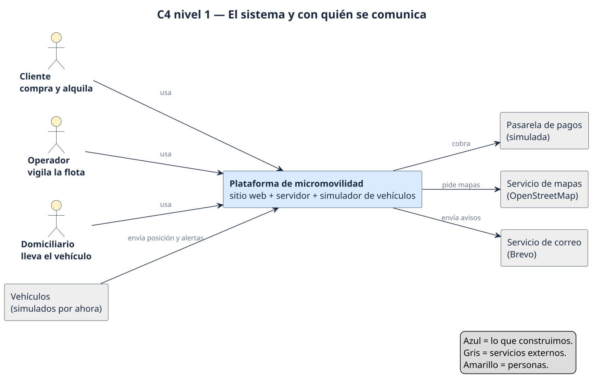
entregables/diagramas/fuentes/08-c4-contexto.puml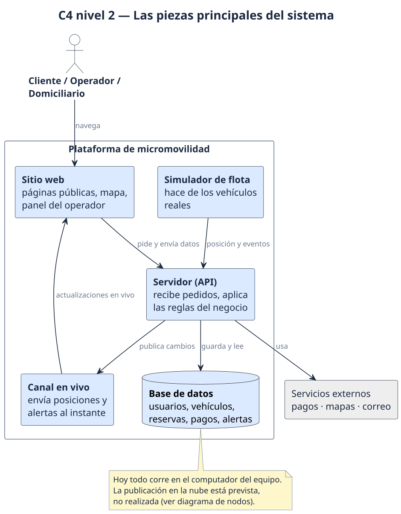
entregables/diagramas/fuentes/09-c4-contenedores.puml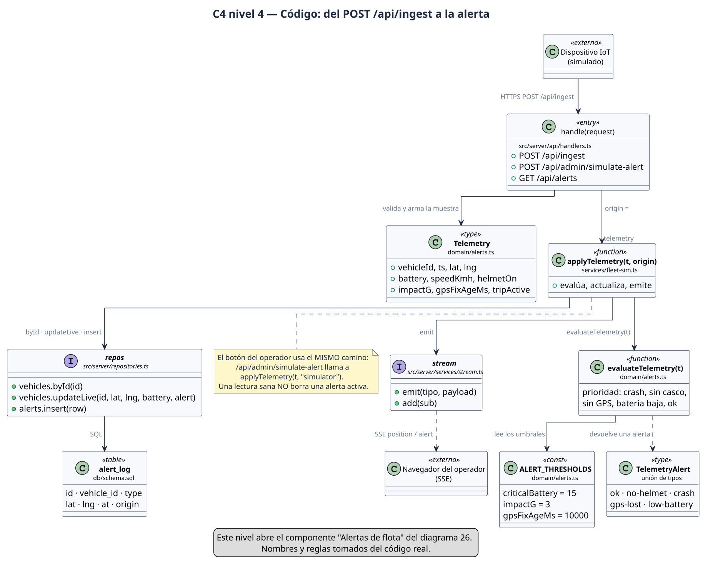
entregables/diagramas/fuentes/27-c4-codigo.puml| Fecha | Hito |
|---|---|
| 01-oct-2026 | SRS v1.2 y plan de aseguramiento de calidad (SQA). |
| 08-oct-2026 | 20 casos de uso especificados; pruebas unitarias, de integración y E2E; contrato OpenAPI v0.2; revisiones SQA de diseño y código con registro de defectos; manual técnico. |
| 09-oct-2026 | Detección de casco con YOLOv8n-ONNX en el navegador; landing con fotos reales. |
| 21-oct-2026 | Diagramas de paquetes, componentes y nodos; investigación UML. |
| 26-oct-2026 | Auditoría de brechas de RF, RNF y casos de uso. |
| 05-nov-2026 | Despliegue en producción con HTTPS; API en el build de producción; accesibilidad de la landing de 80 a 100. |
| 06-nov-2026 | Ronda de QA con 5 usuarios y correcciones. |
| 09-nov-2026 | Casco verificado por la cámara ESP32-CAM del vehículo; escaneo real de QR; WebSocket de cámara. |
| 10-nov-2026 | Pagos con Bold: link de pago, checkout embebido con firma de integridad y página de resultado. |
| 13–16-nov-2026 | Migración a VM nueva; seeder de datos de demostración; confirmación de reserva por correo con Brevo. |
| 17-nov-2026 | Integración de la cámara de casco, QR por vehículo y modelo fp32 en la VM; diagramas C4 niveles 3 y 4. |
| 19–20-nov-2026 | Módulo de mantenimiento con telemetría histórica, panel de cámara del PC, hoja de QR imprimible, tarjetas de reserva; diagramas D-28 y D-29; guía de lanzamiento. |
| Verificación | Resultado | Fecha |
|---|---|---|
Tipado estático (tsc --noEmit) | 0 errores | 20-nov-2026 |
| Pruebas unitarias + integración (Vitest, 20 archivos) | 156 / 156 | 20-nov-2026 |
| Pruebas E2E (Playwright, Chromium escritorio + Pixel 7) | 19 aprobadas, 1 omitida | 06-nov-2026 |
| Smoke de API (13 pasos, login a RBAC) | 13 / 13 | 08-oct-2026 |
Cobertura del dominio (src/server/domain) | 100 % líneas · 90,9 % ramas | último reporte |
Lighthouse producción / (rend./acc./BP/SEO) | 92 / 100 / 100 / 100 | 05-nov-2026 |
Lighthouse producción /catalogo | 100 / 100 / 100 / 100 | 05-nov-2026 |
| Revisión de código SQA | 0 críticos · 0 altos · 2 medios | 08-oct-2026 |
El documento de pantallazos contiene el recorrido completo; aquí se incluyen tres evidencias de las funciones más recientes.
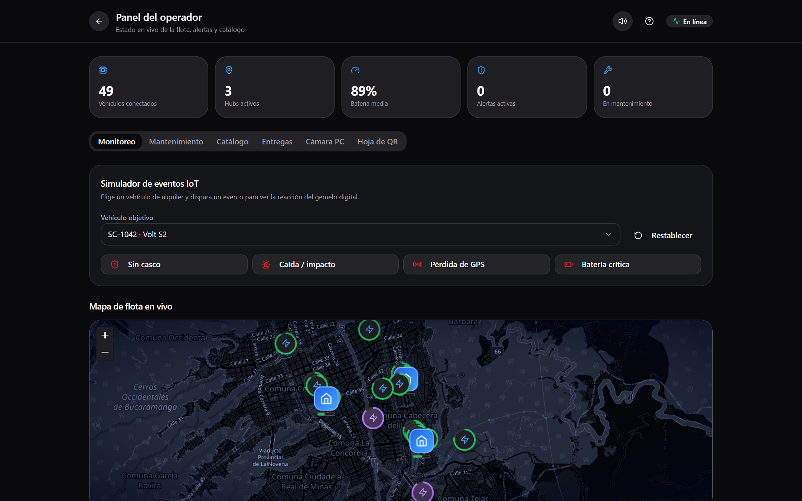
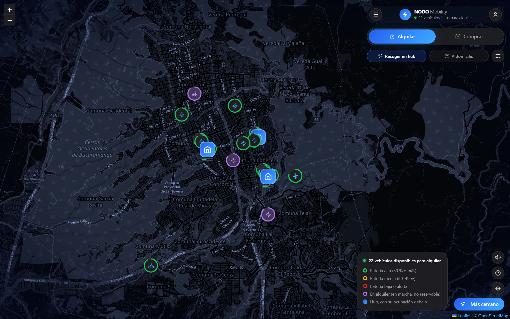
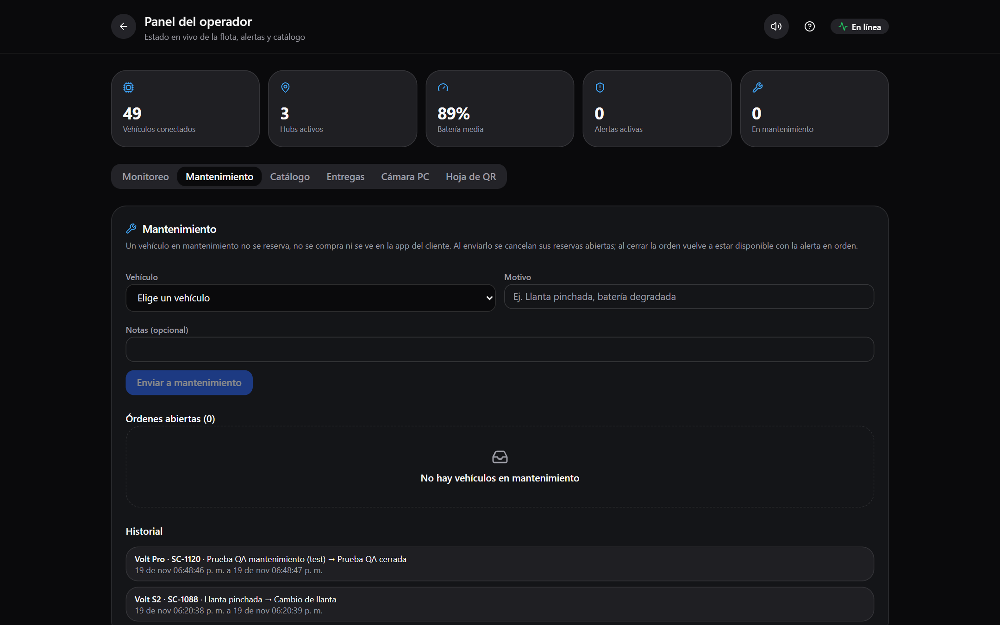
| Pendiente | Impacto | Plan |
|---|---|---|
| Biometría facial real (plantilla cifrada AES-GCM) | El desbloqueo facial funciona en modo demostración | Enrolamiento con consentimiento desde la cuenta y plantilla cifrada en servidor |
| Broker MQTT real para comandos al vehículo | Los gemelos digitales están simulados | Broker gestionado y topics umh/vehicle/{id}/* |
| Alinear el umbral de casco en la documentación | El código usa 0,70; D-18 y UC08 indican 0,80 | Fijar un único valor tras la calibración del modelo |
Guardas de ruta en /admin y /entregas en el cliente | Bajo: la API ya exige el rol | Redirección en el router |
Relación entre requisitos, casos de uso, diagramas de diseño y pruebas.
| Req. | Caso de uso | Secuencia / estados | Clases / componentes | Pruebas |
|---|---|---|---|---|
| RF-02, RF-03 | UC03, UC04 | D-28, D-16 | Vehículo, Compra, Pago | e2e reserva-desbloqueo (compra) |
| RF-04, RF-08 | UC06, UC20 | D-28, D-19 | Vehículo, SSE, fleet-sim | tracking, alerts, geo |
| RF-05, RF-06 | UC05 | D-17, D-21 | Reserva, Hub | CP0001_ALQUILER, flujo-cliente, api-reglas |
| RF-07 | UC07 | D-28 | Hub | backend-flows |
| RF-09 | UC08 | D-18, D-22 | SesionDesbloqueo, ReglaDeSeguridad | CP0002_DESBLOQUEO, unlock, camera, helmet-* |
| RF-10, RF-22 | UC09 | D-18 | Consentimiento, SesionDesbloqueo | unlock (TC-UNL-10..13, 18) |
| RF-11, RF-12 | UC20, UC12 | D-19 | Alerta, ReglaDeSeguridad | alerts, api-reglas (R2) |
| RF-13 a RF-15 | UC10, UC11 | D-29, D-19 | KPIs, simulador | backend-flows (KPIs) |
| RF-20, RF-21 | UC01, UC02 | D-15 | Usuario, Consentimiento, sesiones | sessions, smoke e2e, qa-usuarios |
| RF-23, RF-24 | UC13 | D-29, D-22 | Vehículo, Hub, mantenimiento | backend-flows (RF-24), mantenimiento |
| RF-25 | UC14–UC16 | D-20, D-23 | Entrega | CP0003_ENTREGA, api-reglas, backend-flows |
| RF-26 | UC18 | D-16, D-17 | Pago, PasarelaDePagos | pasarela, bold, api-reglas (timeout) |
| RF-27 | UC17, UC19 | D-20, D-23 | Entrega, Notificación | CP0003_ENTREGA, brevo |
| Tarea | Comando (Git Bash, desde la raíz del repositorio) |
|---|---|
| Diagramas PlantUML (requiere Java) | sh entregables/diagramas/generar.sh |
| Dependencias del generador de PDF | npm --prefix entregables/entrega-final/tools install |
| Este documento y el de pantallazos | node entregables/entrega-final/tools/build.mjs |
| Pruebas | npm run typecheck · npm test · npm run test:e2e |